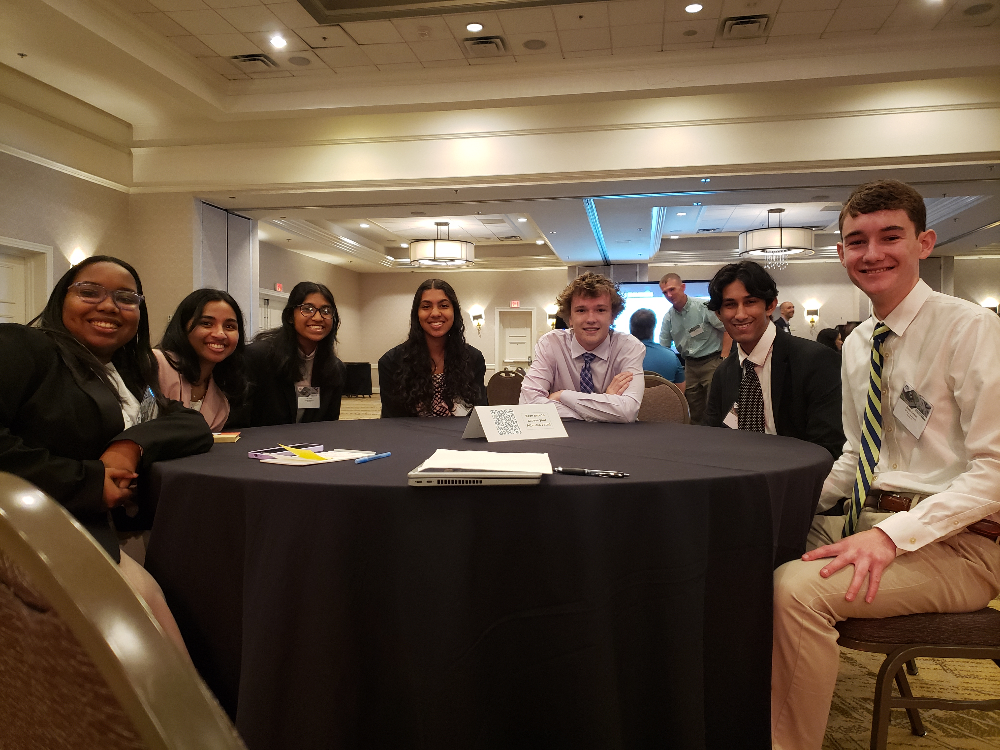

The Center for Information Technology offers many unique experiences that provide its students with the skills necessary for success in their future. These experiences are the Community Innovation Technology Project, Senior Internship, and Senior Capstone Project. Through these experiences, students will be able to sharpen skills that will be crucial to whatever career field they choose. This opportunity also allows the students to practice skills specific to the computer science field. Competencies such as teamwork, responsibility, leadership skills, and communication are often hard to come by, but CIT's Hallmark Experiences is the perfect opportunity for individuals to grow.
During the summer before senior year, students are required to partake in an internship. This internship enables students to engage in real-world IT events. Through this internship, students are able to utilize their project management skills and their previous experience with clients from nonprofit projects. This internship gives students a feel for how a career in IT would be. This internship also enables students to practice technical skills that they have learned throughout their CIT courses such as software design and program development.
"Over the summer of 2021, I interned with the IT department of AutoPartSource, an automotive parts manufacturing, and distribution company, as well as a sub-company of Momentum USA Inc. My internship was a bit different from others in that it was not a traditional computer science internship. Rather than focusing on computer science concepts like cybersecurity or machine learning, my internship was centered around applying computer science to the business world. We learned how to utilize Excel to manage large data sets; we learned about the importance of documentation by creating Standards of Procedure documents for the IT department; we even learned how to communicate effectively with other, non-IT departments. There was also a heavy emphasis on soft skills in my internship. I was able to sit in on and actually participate in some of my mentor’s meetings, and a large portion of my work was self-paced. This allowed me to develop more advanced communication, leadership, time-management, and organizational skills by participating in the business and experiencing a typical IT office job. All in all, I really enjoyed my summer CIT internship, and it taught me a lot of valuable information about computer science, business, and myself."
CIT Student, Katie Z.
"During my summer internship with the Richmond Public Defender’s Office, I developed a website for the organization to improve their digital presence, allow them to showcase their work and impact in the criminal justice system, and most importantly, provide resources for indigent clients who need legal assistance and access to social services. Since I didn’t know much about the legal system initially, my internship mentor made every effort to familiarize me with it. She and her colleagues worked closely with me to help me understand the legal process and the role of public defenders, spent time articulating their clients’ needs for the website, and even took me to Richmond district court to witness their work in actual court proceedings. Throughout my internship, I got to experience a real office environment and had the opportunity to apply many of the programming and project management soft skills I’d learned in the CIT. Most importantly, in my view, I had the opportunity to contribute towards their organization’s work, connect with a diverse group of individuals, and explore another field outside of computer science. "
CIT Student, Ronojoy D.
"I interned with Dr. Shepherd for CodeBeats in the Computer Science Lab at VCU this summer in the Engineering Research Building (search it up, the facility was newly built and very nice!) For the first half of my internship, I worked on just CodeBeats, which is a coding summer camp for beginning students. This wasn't my favorite part, but I still had fun; I user-tested the curriculum, facilitated the actual camp which took place over youtube live, and met with students during the Zoom help sessions to help with their code. The second half of my internship was very exciting. There was a group of undergraduate and graduate students that had previously written their own programming code for a robot and were holding an experiment to test the efficiency of the program against the factory-made one. I helped with running the experiment, which included briefing the participants and recording data and notes for each person. Another project I worked on was creating a more advanced coding curriculum for middle and high schoolers. Basically, I searched through Repl.it for open source code and used it to make programming assignments."
CIT Student, Grace Z.
"Overall, my internship experience was amazing! I worked with a media and streaming company named CMAX, which is based in Norfolk, Virginia. They contract with like-minded Christian media corporations. For example, through our partnership with Awakening the Domestic Church (ADC), I reworked their website and embedded formation videos that I had uploaded via CMAX. (Videos that ADC made are viewed through CMAX, and we're able to track how many people clicked said video series from their main webpage). My main role throughout this process was as the IT and Web Support Assistant. Basically, I focused on re-working partnered webpages, so they became presentable and user-friendly, along with providing technical support to consumers, and developing a shop page, for those interested in a digital download of content. I would say my main takeaway is the ability to see how many people visited the websites and had watched content as a result of my work -- it was a new endeavor for me, as previously most work I had done was in a school setting where there are no "real" consumers."
CIT Student, Sebastian F.
Each spring, sophomores and juniors in the center collaborate in teams of 5-8 to complete a project given to them by an outside organization. The team will have a project lead(junior) and project manager(sophomore), but each member of the team will make a significant contribution towards the final deliverable. The project team utilizes Scrum Methodologies to practice effective software development. Students will be placed on teams according to what they are most interested in creating for the project. Some examples of projects are websites, web apps, applications, and creation of hardware. This is an extensive project that lasts three months and counts as a final exam grade.
Every year, Virginia spends billions of dollars on Education. Our application takes a look at these spendings as well as its effects. Is our increased spending making a difference? Visit the Analyze page to view state-wide analysis, or visit the Map page to look straight into the data yourself. Use the search bar to see statistics for specific counties.
BEAST is an app created to compare teacher salary to student performance. It shows how efficiently different schools pay their teachers. BEAST also helps schools adjust their budgets after seeing this correlation. This project was developed by former CIT students Dominic, Lauren, Peyton, Jack, Justin, Tahir, Colin, and Jessica.

People with disabilities are the world's largest minority, yet oftentimes they are not featured as much as they should be. Introducing Analysis of Special Education (ASE), the web application that breaks through the numbers to see how Special Education is succeeding in schools. With the use of education data from Virginia school systems, ASE parallels the success of students with disabilities to those without. This project was developed by former CIT students Jessica, Nigel, Vamsi, Noah, Alex, Gurumanpreet, Qian, Benjamin, and Michael.
DropStop is an app aimed at helping division and state policymakers find out where certain groups of students are falling behind. It reveals and compares dropout rates among different races, genders, disabilities, economic statuses, and LEP statuses to help establish where changes need to be made. This project was developed by former CIT students Lexi, Sydney, Brandon, Kevin, Forest, Grant, Lee, and Ethan.

The ITSVA project team for the 2023 CIT Projects designed a new website for the Intelligent Transportation Society of Virginia (ITSVA). The goal was to create a new website for the organization that would enhance their image and outreach through a sleek, modernized design and improved site maintainability through WordPress themes and plug-ins. This team was selected to unveil the new website at the 2023 ITSVA Annual Conference, an event where industry leaders working in the field of transportation and intelligent systems gather. The project team was Anooshka Pendyal (Project Lead), Brielle Brown (Project Manager), Kera Parham, Ru Patel, Vihaan Dutta, Brady Kimball, and Carter Barnes.
In students' senior year, they have the option to take capstone as one of their classes. Students then choose the specific concentration that they wish to research and base their project on. The four capstone concentration areas are game design, IT project management, network security, and database design and development. In the first marking period of the course, students will receive instruction related to their subject area. After passing a test on the curriculum, students write a research paper that will correlate to the project they will work on in the future. Students will work on the project for a minimum of 100 hours and present it at the conclusion of the course.
During IT Project Management in students' sophomore year, they will give a 10-minute presentation to the class on a technology-related topic. Students also create a handout for their topic and an activity that reinforces what will be presented. This not only is a great opportunity for students to research a particular subject they are interested in but also an opportunity to strengthen the fundamental skill of public speaking. While a 10-minute presentation might seem like a daunting task, it is very beneficial for students in the long run.
In the 2021 Virginia Datathon, two teams from Deep Run High School competed alongside 24 teams from graduate school programs, state and local government agencies, and regional and national publicly traded corporations. Both Deep Run High School teams were among the 14 teams that submitted presentations within the defined specs of 5 minutes.
One of the two teams was 5 students from the Center for Information Technology Senior Capstone Data Science Concentration. They pitched a methodology to leverage data from Virginia’s Open Data portal to predict where food deserts were likely to occur so that appropriate action could be taken to mitigate the impact. This team led with a somewhat provocative intro that got a shout-out from the host. The VDOT team led with the same thought, too. The other team was a mix of six of Deep Run Juniors and Seniors, who pitched a Mobile App “Food Finder” to “Take a byte out of hunger”. They worked alongside a Google resource to actually develop the working app that would connect grocery stores and clients to the closest food hubs.
Both teams landed their pitches in bounds to successfully compete with some powerful other players. One of the Google tech resource, upon hearing what the food desert prediction team was working on, looked at them quizzically and said incredulously, “and you guys are in high school? I didn’t know this stuff existed then.” Another Google tech resources, who worked with the team to develop the app, also expressed how he was impressed with what they were able to dream up and then quickly bring to life.
All of the students seemed energized and appreciative indicating that they learned much through the process.
As sophomores, students in IT Project Management create and manage events. These projects are a great opportunity for students to learn how to work in teams, manage risk, and see all the moving parts involved with making a project.
Here are some student run projects from the 2021-2022 school year.
Every year, CIT hosts a Hackathon. This year the CIT Hackathon had a great turnout. We had a total of 9 teams, in which each team competed to create a functional product using computer science. That meant any sort of digital asset could be used, such as graphic design, coding, creating a website, etc. The theme for this year’s hackathon was “Food Delivery Service”. We saw many different takes on this; some teams would create products to aid a delivery service, whereas others were even creating their own Food Delivery Service similar to Uber or DoorDash. Third place was won by BBL Bagels, who used python to create a Food delivery system that tracked your order and gave you information about when your bagels were ready. Second place was won by the Shaolin Rebels, who created a website for a Chinese-based food delivery service. The website showed you nearby Chinese restaurants that were open and allowed you to order in their order form. Finally, first place was won by the Coffee Debuggers team, which created a coffee ordering service for programmers. Prizes were given out to the top 3 teams.


The CIT Open House is an excellent opportunity for 8th graders to learn about CIT and if it is right for them. While parents attend an informational meeting, 8th graders participate in fun computer science activities that are all run and designed by CIT students.